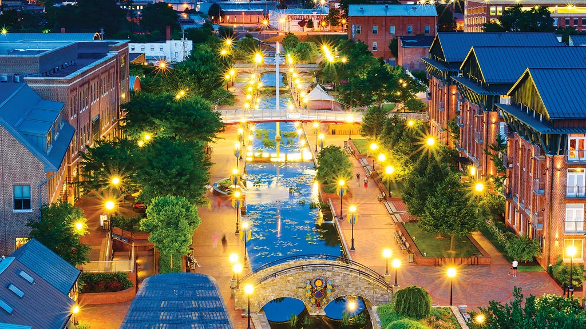

Welcome to Frederick, Maryland
Explore the rich history and vibrant community of Frederick, Maryland,
located in the heart of Western Maryland.
About Frederick
Frederick, located in Western Maryland, is known for its suburban feel
and rich history.

- Population: 70,000
- Year Incorporated: 1817
- Region: Western Maryland
- Classification: Suburban
- Average Income: Comparable to the state average
For more information about Frederick, visit
City of Frederick.